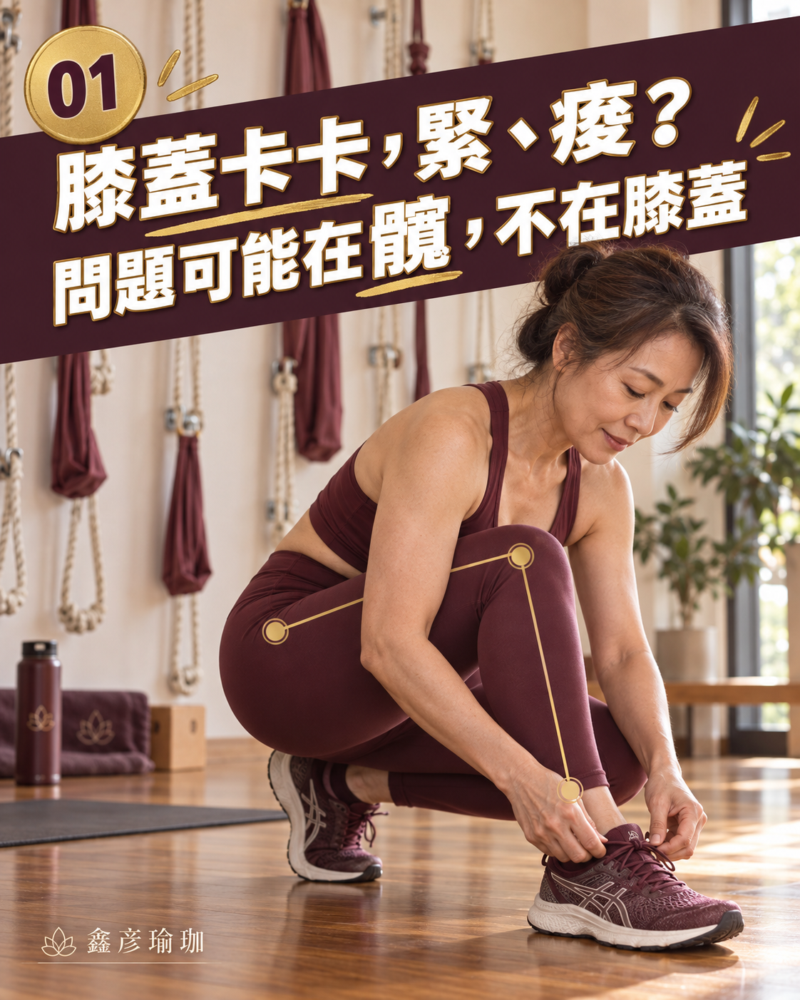
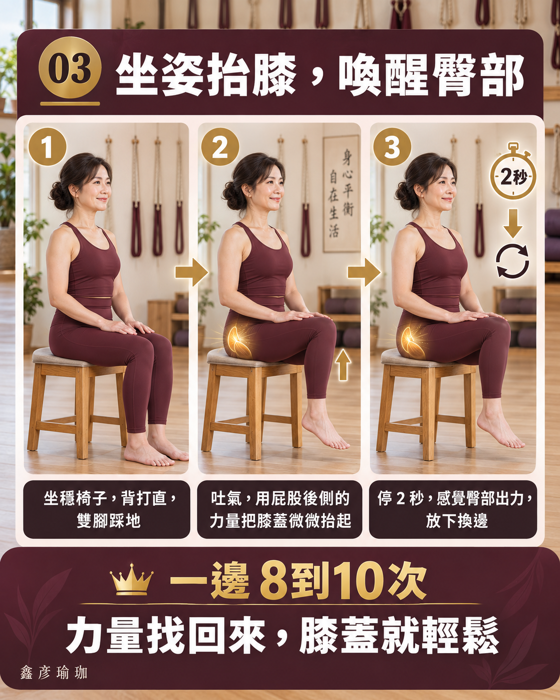

膝蓋卡卡不一定在膝蓋？先看懂髖關節活動度與下肢代償的關係

- 蹲下綁鞋帶或上下樓梯時膝蓋發緊發卡，若無外傷紅腫，往往與相鄰的髖關節活動度受限密切相關。
- 膝關節在力學上屬於穩定的鉸鏈關節、不擅長大幅旋轉；當髖與踝關節卡住時，膝蓋常被迫做出扭轉代償。
- 久坐導致髖屈肌縮短且臀肌活化度不足，負重時易引發膝關節內扣（Knee Valgus），增加膝內側與髕骨剪力。
- 壁繩瑜伽利用懸掛支點分擔體重，能在保護膝蓋的前提下安全開展髖部並重新喚醒臀肌支撐。
蹲下去綁鞋帶、或是上下樓梯時，膝蓋總是傳來緊繃感或細微的喀喀聲？很多人第一時間會擔心自己的膝蓋是不是磨損退化了。然而在人體的動力鏈中，膝關節往往只是夾在上游與下游中間的「受害者」；許多時候，真正活動度不足的源頭，其實位在它上方的髖關節。
膝關節的先天設計：它需要穩定，不太會轉
在運動生物力學的「關節相鄰假說（Joint-by-Joint Approach）」中，人體各主要關節有著交替的分工特性：
- 髖關節（Hip）：屬於球窩關節，天生具備多方向旋轉與大幅度屈伸的活動需求。
- 膝關節（Knee）：屬於鉸鏈關節，主要負責順著同一平面的屈曲與伸直，先天容許的水平旋轉角度極小。
- 踝關節（Ankle）：負責足部的背屈與蹠屈，同樣需要靈活的活動度來適應地形。
膝蓋剛好夾在兩個活動度需求極高的關節中間。當髖關節或踝關節因為長期久坐或活動僵硬而轉不動時，身體在蹲下或跨步時為了完成動作，就只能硬逼膝蓋做出它不擅長的角度來「代償」。長期下來，周圍的肌腱、韌帶與滑液囊便容易感到卡、緊、痠。
往上游看：久坐讓髖太緊、臀太弱
日常走路、起立、深蹲或爬樓梯，看似是雙腿的動作，但主要發力與吸震的核心其實是髖部與臀部：
- 髖關節屈伸活動度受限：長時間坐姿讓深層的髂腰肌處於縮短狀態，導致站立與下蹲時髖關節無法順暢後推，迫使重心前移、直接壓迫在膝關節髕骨上。
- 臀肌（臀大肌、臀中肌）低活化：臀肌負責穩定骨盆並防止大腿骨（股骨）過度內旋。當臀肌因久坐缺乏活化，下蹲或走路著地時膝蓋容易出現向內夾（膝內扣）的動作偏差，改變髕骨活動軌跡。
膝蓋的不適感常常是在替僵硬的髖關節「還債」——透過安全方式釋放髖前側張力、喚醒臀部發力，膝蓋周圍的代償負擔自然能獲得舒緩。

壁繩瑜伽怎麼幫忙？分擔體重、把動作重心還給髖部
想活動髖部與強化臀肌，許多人最常遇到的瓶頸是：只要一做深蹲或弓箭步，膝蓋就已經先發痠抗議。壁繩瑜伽在此展現了極佳的保護機制：藉由壁繩的懸掛牽引，能有效分擔身體垂直向下的重量，讓練習者在膝關節幾乎不承受壓力的前提下，深層延展緊繃的髖前側；同時在老師的輔助觀察下，引導練習者學會用臀大肌推進，而不是單靠膝蓋硬推。想進一步了解久坐如何讓臀部反應變慢，可參考久坐讓屁股「失憶」了嗎？先看懂臀肌鈍化與骨盆支撐的真實機制。
想了解自己站姿與下肢的排列平衡？
AI 體態檢測透過 2D 正側面站姿拍攝，量化雙側骨盆高度、下肢力線與站立重心參考線，幫助你與老師當面釐清日常站立受力習慣，找出適合的練習起點。（非醫療影像診斷或骨骼關節疾病判定）
預約首次 NT$299 AI 體態檢測今天就能做的一個小練習：坐姿抬膝喚醒臀部
找一張沒有滾輪的穩固椅子坐好，背部自然打直，雙腳平貼地面。接著進行微型的神經肌肉喚醒練習：
- 先緩慢吸氣穩定骨盆，吐氣時專注使用「大腿根部後側與臀部」的深層力量，將單邊膝蓋輕輕向上抬離地面約 2 到 3 公分。
- 在微抬的最高點停留 2 秒，確認下背沒有往後癱、腹部微收，感受臀部有主動出力的緊實感。
- 緩慢放下後換邊進行，一側做 8 到 10 次，配合平穩呼吸、切忌憋氣。

此動作的目的在於重新在大腦與臀肌之間建立動作感知路徑，而非高強度疲勞訓練。規律練習能幫助身體在日常生活起立行走時，更自然地徵召臀部出力。
本文為體態與姿勢的一般衛教與練習分享，非醫療診斷或治療。若膝關節出現紅腫熱痛、卡死鎖定無法彎伸、劇烈刺痛或明顯外傷舊疾，請先諮詢骨科或復健專科醫師。
常見問題
蹲下或上下樓梯時膝蓋常有卡卡聲，代表膝蓋壞掉了嗎？
不一定。關節卡卡聲可能源自關節液氣泡破裂、肌腱滑過骨骼隆起的生理彈響，或是髕骨在滑軌中軌跡稍有偏斜。只要沒有伴隨紅腫、刺痛、發熱或活動受限，多屬於機能性代償現象；但若伴隨急性疼痛或膝蓋卡死無法伸直，應先尋求骨科醫師評估。
為什麼說膝蓋的不適，常跟上方的髖關節有關？
膝關節在解剖結構上主要負責屈曲與伸直，容許的旋轉角度極為有限；而上方的髖關節與下方的踝關節則需要足夠的活動度。當髖關節因長期久坐而僵硬緊縮、旋轉受限時，下蹲或走路時身體為了完成動作，往往會迫使膝關節做出不擅長的代償扭轉，增加局部韌帶與軟組織負擔。
臀肌無力為什麼會讓膝蓋更容易受壓？
臀大肌與臀中肌負責維持骨盆穩定並控制大腿骨（股骨）的方向。當臀肌因久坐缺乏活化時，大腿容易在負重時出現向內夾（膝內扣，Knee Valgus）的代償傾向，改變髕骨滑動的軌跡，使膝關節內側與髕骨周圍承受過大剪力。
壁繩瑜伽如何協助減輕膝關節的負擔？
壁繩能提供穩固的懸掛承托，有效分擔下肢承受的垂直體重；練習者可在不對膝關節施加過度壓力的狀態下，安全延展深層緊繃的髖屈肌群，並在有支撐的輔助下重新練習臀肌發力，建立正確的下肢動作排列。
在家做坐姿抬膝練習時，有哪些安全細節？
坐在穩固且不具滑輪的椅子前端，雙腳平踩地面、脊椎自然向上延伸；吐氣時專注使用臀部深處的力量將單側大腿微微離地抬起約 2 到 3 公分即可，停留 2 秒感受臀肌發力，切勿利用腰椎後弓或身體向後仰來代償借力。